Attract Marketing블로그 · 홈페이지 마케팅
마음을 끌고,성과를 만듭니다
검색에서 우리 가게를 찾은 고객이 블로그를 읽고, 홈페이지에서 문의를 남기기까지. 이끌림은 그 흐름을 설계하고 매달 숫자로 보여드립니다.
- 카카오톡으로 편하게 상담
- 무료 블로그 진단
- 원고 작성부터 발행까지
- 월간 성과 리포트
- 인테리어 필름
- 철거
- 학원
- 입주청소
- 주방 후드
- 식품 설비
- 도시락 · 케이터링
- 폐차
- 해외 배송
- 폐기물 · 고철
- 석면 해체
- 전기공사
- 산업 기계
- 렌탈
- 음식물처리기
01
세 가지를 한 번에 돌립니다그래서 지수가 오릅니다
광고는 예산이 끝나면 노출도 멈춥니다. 블로그 글은 쌓일수록 검색 유입을 만드는 자산이 됩니다. 이끌림은 네이버가 글을 고르는 기준에 맞춰 세 가지를 함께 돌립니다.
- 01D.I.A.+
품질 콘텐츠
실제 경험과 원본 사진으로 쓴 글만 발행합니다. 네이버는 이런 글을 우대하고, 복사해 붙인 글은 낮게 봅니다.
- 02스마트블록
첫 화면 노출 설계
결론을 먼저 쓰고 소제목 · 목록 · 표로 정리해, 검색 첫 화면의 스마트블록 자리를 노립니다.
- 03체류 시간
오래 읽히는 블로그
끝까지 읽히는 구성과 관련 글 연결로 머무는 시간을 늘려, 블로그 전체 지수를 올립니다.
이 세 가지를 계속 순환시켜 블로그 지수를 꾸준히 끌어올립니다.
02
필요한 만큼,한 팀이 맡습니다
블로그 포스팅 한 건부터 블로그와 홈페이지를 함께 맡기는 통합 패키지까지 고를 수 있습니다.
-
대표 상품 · 통합 패키지
홈페이지 및 블로그 관리대행
포스팅 · 활성화 · 디자인을 한 팀이 함께 돌립니다
블로그 포스팅과 블로그 활성화, 홈페이지·블로그 디자인을 하나로 묶어 매달 함께 운영합니다. 검색에서 글을 보고 들어온 고객이 홈페이지에서 문의까지 남기도록 두 채널을 하나의 흐름으로 설계합니다.
- 블로그 포스팅과 활성화 운영
- 홈페이지 제작과 사례·사진 업데이트
- 블로그에서 홈페이지 문의로 이어지는 동선
- 유입 키워드와 성과를 담은 월간 리포트
-
건 단위
블로그 포스팅
목표 키워드로, 사장님의 원본 사진으로
-
월 단위
블로그 활성화
방문자 · 이웃 · 체류 시간을 함께 관리합니다
-
건 단위
홈페이지 제작
보는 순간 문의하고 싶어지는 홈페이지
-
건 단위
블로그 스킨 디자인
스킨 · 카테고리 · 프로필 배너를 하나로
-
건 단위
영상 제작
하는 일을 짧은 영상으로 보여 줍니다
03
함께하면,이렇게 달라집니다
사장님 업종을 골라 보세요. 실제 검색 화면과 사장님이 보내 주신 말을 그대로 보여 드립니다.
철거 업체
6개월 동안 통 전화 없다가 들어오는 이 느낌, 너무 좋아요
- 고민
6개월 가까이 문의 전화가 거의 없었습니다
- 한 일
‘화성시 철거’ 지역 검색어로 현장 시공 글을 발행했습니다
- 결과
인기글에 오르고, 식당 철거·재회수거 문의가 2건 들어왔습니다
2건노출 직후 들어온 철거 문의

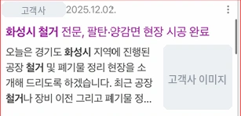
대표님 오늘 포스팅 완료돼서 올렸어요!
문의 전화 조금씩 들어오는 거 같군요
벌써요? 너무 좋은데요 대표님 ㅎㅎ
식당 철거한 건, 재회수거 2건
6개월 동안 통 전화 없다가 들어오는 이 느낌 너무 좋아요

인테리어 필름 시공
블로그 보고 바로 연락 와서 시공한 거예요
- 한 일
‘경기도 인테리어 필름시공’으로 실제 현장 시공 전후 글을 발행했습니다
- 결과
검색 첫 화면 5번째에 노출됐습니다
- 그 뒤
글을 본 고객이 바로 연락해 시공까지 이어졌고, 사장님이 지인 업체도 소개해 주셨습니다
계약블로그 보고 바로 연락 온 고객

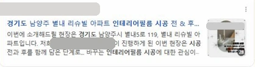
블로그 보고 바로 윗집에서 연락 와서 시공한 거예요
너무 좋네요!! 앞으로도 많이 들어오시면 좋겠어요
또 있으면 연결해 드릴게요 ㅋ
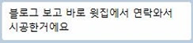
중고 식품 설비
네 감사합니다. 효과가 있네요
- 한 일
‘금속 검출기’가 왜 필요한지 설명하는 설비 글을 발행했습니다
- 결과
발행하자마자 블로그 검색 4번째에 올랐습니다
- 함께
‘중고 프로컷터’ 검색에서는 인기글에 노출됐습니다
4번째발행하자마자 검색 노출

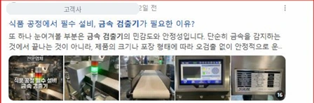
대표님 금속 검출기만 검색했는데
상위노출 4번째에 바로 되는 중이에요!!
네 감사합니다. 효과가 있네요

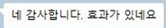
주방 후드 교체
노출이 되는 거 같아요, 만족하고 있습니다
- 한 일
동대문 주방후드 교체 현장을 고객이 실제로 검색하는 질문형 검색어로 풀었습니다
- 결과
‘오래된 후드 위험한가요’ 검색 1번째, ‘서울 후드분해청소’ 상위노출
- 반응
작업하느라 바쁜 와중에도 “만족하고 있다”고 답해 주셨습니다
1번째검색 결과 맨 위

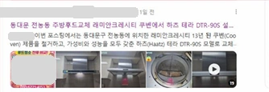
대표님 어제 올라간 포스팅은 좀 어떠신가요~?
노출이 되는 거 같아요 만족하고 있습니다
제가 작업 중이어서 이제야 답해드려요
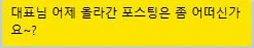
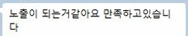
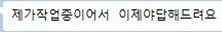
수학학원
플레이스도 1등 올라갔어요, 감사 감사~
- 한 일
‘수원 망포동 수학학원’으로 실제 수업 이야기를 담은 글을 발행했습니다
- 결과
블로그 검색 3번째에 노출됐습니다
- 그 뒤
원장님이 직접 “플레이스도 1등 올라갔다”고 알려 주셨습니다
1등네이버 플레이스까지

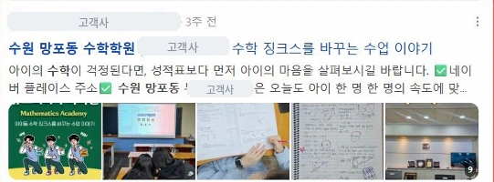
ㅎㅎ 힘찬 fighting으로 출발하자구요~~ Thank you!!
플레이스도 1등 올라갔어요 ㅎ 감사 감사~~
진짜요?
그러게요 ~~~짱

수제 도시락 · 케이터링
블로그 보는 재미를 느끼고 있어요
- 한 일
대학교 회의 도시락 납품 현장을 ‘프리미엄 수제 도시락’ 글로 발행했습니다
- 결과
블로그 검색 1번째에 노출됐습니다
- 그 뒤
이웃이 늘고, 사장님이 블로그 보는 재미를 느끼신다고 하셨습니다
1번째목표 검색어 맨 위

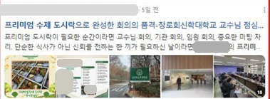
말씀 주신 부분 수정해서 발행했습니다!
추가가 되는 거 같아요~ 지금 관리하는 내용도 몇 가지 남겨주시면 감사해요~
블로그 보는 재미를 느끼고 있어요~ 오늘 좋은 느낌이에요
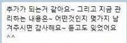
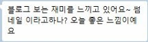
04
상담부터 리포트까지여섯 단계
진단 없이 제안하지 않고, 리포트 없이 넘어가지 않습니다.
- 01
상담
업종과 목표, 지금 블로그 상태를 확인합니다.
- 02
진단
블로그 지수와 검색 노출 현황을 분석합니다.
- 03
전략
공략할 키워드와 콘텐츠 주제를 설계합니다.
- 04
제작 · 발행
원고를 써서 발행하고, 사진과 영상을 준비합니다.
- 05
활성화 운영
방문자와 이웃, 체류 시간을 꾸준히 관리합니다.
- 06
월간 리포트
유입 키워드와 성과를 숫자로 보고합니다.
사장님이 하실 일사업 소개와 사진 자료를 보내 주시고, 한 달에 한 번 보고 내용만 확인하시면 됩니다. 나머지는 이끌림이 맡습니다.
05
먼저 맡겨 본사장님들의 한마디
카카오톡으로 받은 말을 그대로 옮겼습니다.
“덕분에 문의가 조금 늘어서 바쁘게 보내고 있어요”
업종 비공개“전화로 블로그 보고 연락드렸어요 하시거나 톡톡으로 문의하시더라구요”
업종 비공개“노출이 되는 거 같아요, 만족하고 있습니다”
주방 후드 교체“플레이스도 1등 올라갔어요”
수학학원“또 있으면 연결해 드릴게요”
인테리어 필름 시공“블로그 보는 재미를 느끼고 있어요”
수제 도시락“6개월 동안 통 전화 없다가 들어오는 이 느낌, 너무 좋아요”
철거 업체“효과가 있네요”
중고 식품 설비
끌리는 브랜드는검색에서 시작됩니다
카카오톡으로 블로그나 홈페이지 주소를 보내 주세요. 지금 상태를 무료로 진단하고, 업종에 맞는 시작점을 안내해 드립니다.